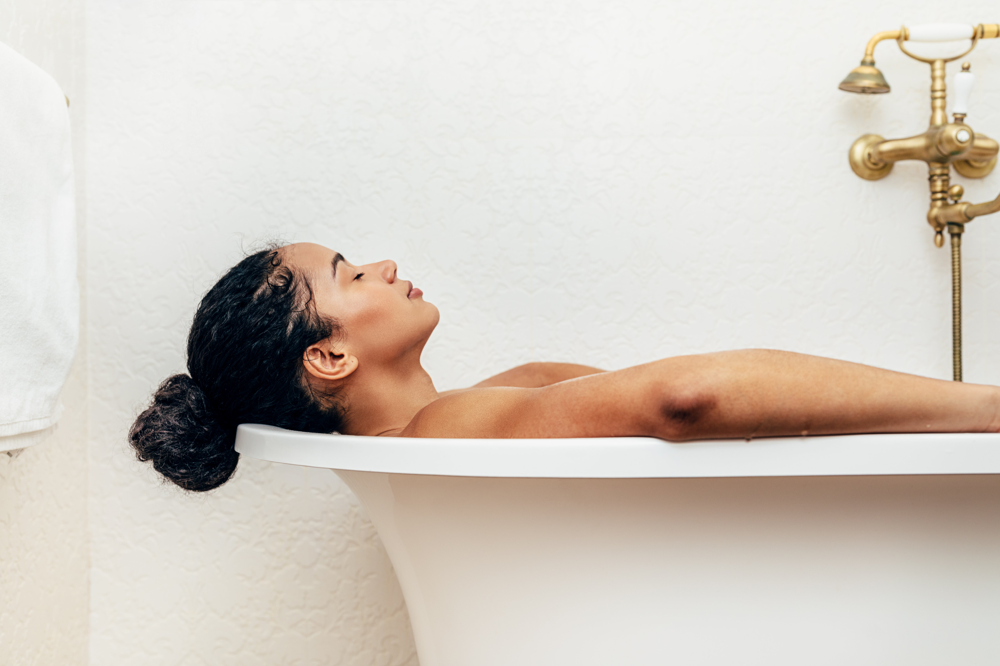

Instead of focusing on the (very long) list of what you can’t do, here are some things you’ll love doing.
Instead of focusing on the (very long) list of what you can’t do, here are some things you’ll love doing.
Don't you think this is the best time to take care of that lovely skin?
Meditation is one of the best things you can do right now to relieve stress and improve your wellbeing. If you’re like the rest of us, you sit down, try to “quiet” your mind… and then say “Well, now what?” Download Aura, an app that walks you through meditation and mindfulness. It’s offering a free three-month subscription, which includes unlimited access to their expert-created mindfulness meditations, life coaching, inspiring stories, and music.

Movie theatres around the country are closed, but that doesn’t mean you can’t still get your cinematic fix. At-home movie projectors have gotten a lot smaller and less expensive in recent years, allowing you to project a new release or family-friendly classic on any blank wall. Pop up some popcorn, set up the pillows, and enjoy the show!
Sitting at home binge watching Tiger King on Netflix may not feel like you’re doing much, but you’re actually living through a major historical event that people will learn and talk about for generations after this is all over. Writing a journal will help you not just preserve your memories but will also help you process your feelings about this time that manages to feel simultaneously terrifying and immensely boring. You could also consider making it a gratitude journal.

Just because you have to stay indoors doesn’t mean you can’t get started on your spring gardening. Bring the outdoors in by sprouting seeds or planting a container garden. Bonus: You can use your fresh herbs in your amazing healthy dishes you’re learning to cook.

Bath lovers rejoice: Self-quarantining is the perfect opportunity to take the long, luxurious bath of your dreams. You can even soak all day if you like! All you need is a good book, a favourite beverage, and some yummy-smelling bath products!
With so many people now suddenly working from home, it’s no surprise that home office arrangements for small spaces are in high demand. And you deserve better than your laptop on a sticky table with cords snaking around your feet! Start by setting apart a dedicated space to work (even if that’s on your couch), and then get productive with these working from home rules.